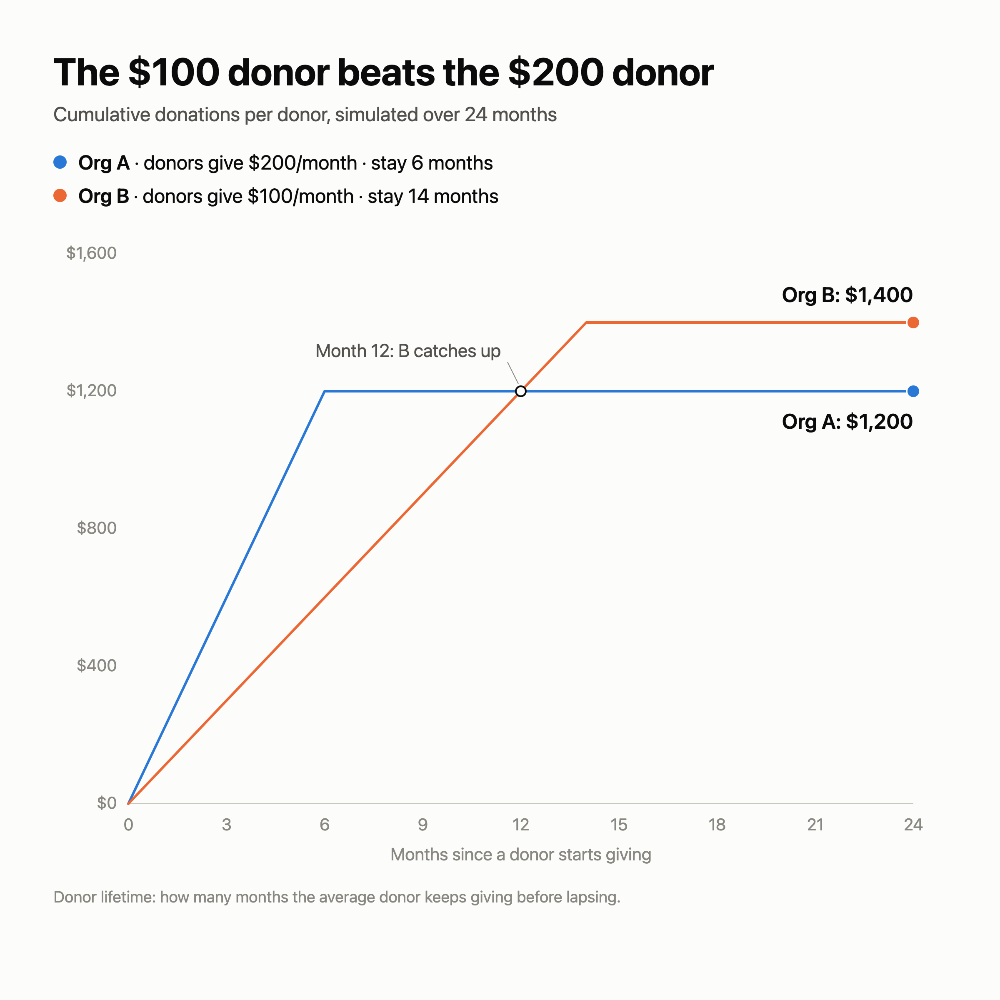

LinkedIn post: donor retention
2026-08-25 09:21pm
Adjusted post (ready to paste)
People in the nonprofit world still underestimate the power of retaining their donors.
In the graph below, I simulate two organizations:
Organization A
- Average monthly donation per donor: $200
- Average donor lifetime: 6 months
Organization B
- Average monthly donation per donor: $100
- Average donor lifetime: 14 months
Organization A raises twice as much per donor, every single month. It still loses.
By month 13, B has collected more per donor than A ever will: $1,400 versus $1,200. And the gap never closes: every new cohort of donors repeats the same pattern.
The math is simple: donor lifetime value = monthly gift × months retained. Doubling retention does exactly as much for revenue as doubling the average gift. Yet most fundraising teams pour their energy into acquisition and gift upgrades, while retention gets a thank-you email and a quarterly newsletter.
If you could improve only one number this year, consider donor lifetime. It is usually cheaper to move than average gift size, and it compounds quietly in the background.
Graph (1200×1200, exported at 2400×2400 for LinkedIn)

Why the numbers changed
Your original setup ($100/month for 8 months) tops out at $800 per donor, so B never catches A's $1,200. Because A's monthly gift is 2× B's, B's lifetime must exceed 2× A's lifetime (more than 12 months) just to break even. B's lifetime was set to 14 months, which makes the claim true: B passes A during month 13 and finishes at $1,400.